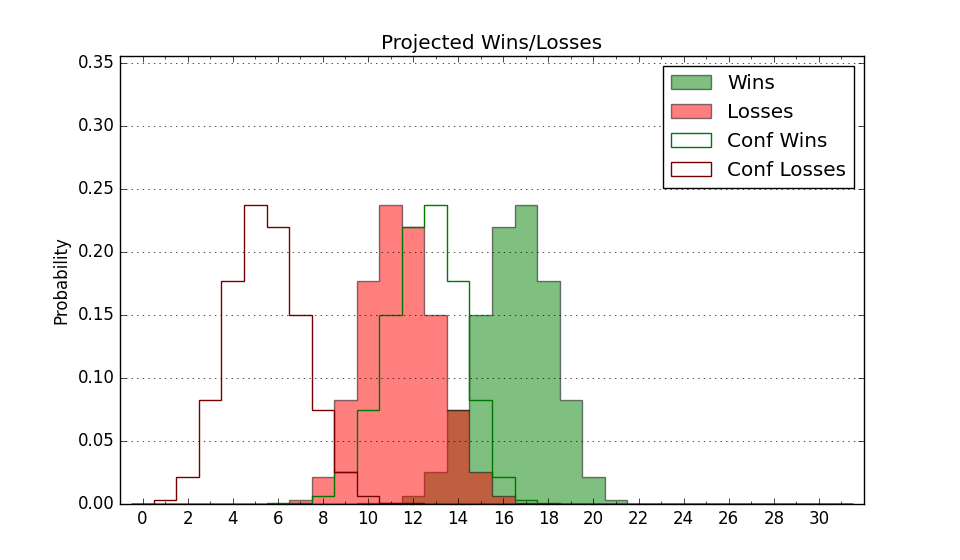

| Home | Game Probabilities | Conferences | Preseason Predictions | Odds Charts | NCAA Tournament |
| City: | Jacksonville, Florida | |
| Conference: | Atlantic Sun (2nd)
| |
| Record: | 4-1 (Conf) 8-7 (Overall) | |
| Ratings: | Comp.: -1.3 (171st) Net: -0.5 (168th) Off: 100.0 (258th) Def: 100.5 (92nd) SoR: 0.3 (118th) |
| Remaining | ||||||
|---|---|---|---|---|---|---|
| Date | Opponent | Win Prob | Pred. | |||
| 1/18 | Central Arkansas (345) | 91.3% | W 77-60 | |||
| 1/23 | @ West Georgia (340) | 73.7% | W 73-65 | |||
| 1/25 | @ Queens (180) | 36.7% | L 71-75 | |||
| 1/29 | Florida Gulf Coast (158) | 60.2% | W 70-67 | |||
| 2/1 | North Florida (242) | 76.3% | W 84-75 | |||
| 2/6 | @ Stetson (349) | 78.4% | W 76-67 | |||
| 2/8 | Bellarmine (356) | 94.7% | W 82-63 | |||
| 2/13 | @ Central Arkansas (345) | 75.4% | W 72-64 | |||
| 2/15 | @ North Alabama (144) | 28.4% | L 67-74 | |||
| 2/18 | @ Florida Gulf Coast (158) | 30.8% | L 66-71 | |||
| 2/20 | @ North Florida (242) | 48.6% | L 79-80 | |||
| 2/24 | Eastern Kentucky (197) | 69.8% | W 77-71 | |||
| 2/26 | Stetson (349) | 92.5% | W 81-63 | |||
| Previous | Game Score | |||||
| Date | Opponent | Win Prob | Result | Off | Def | Net |
| 11/7 | @Florida (8) | 2.1% | L 60-81 | 3.4 | -0.4 | 2.9 |
| 11/11 | @Furman (126) | 24.9% | L 69-78 | -2.2 | 2.3 | 0.0 |
| 11/14 | South Carolina St. (243) | 76.5% | W 71-62 | -4.1 | 7.2 | 3.2 |
| 11/20 | @Virginia Tech (159) | 31.1% | W 74-64 | 7.3 | 12.7 | 20.0 |
| 11/25 | (N) Mercer (240) | 63.2% | L 89-90 | 7.7 | -13.8 | -6.1 |
| 11/26 | (N) Siena (273) | 70.2% | W 75-64 | 7.7 | 0.5 | 8.1 |
| 11/30 | @Georgia (34) | 5.5% | L 56-102 | -3.8 | -30.3 | -34.1 |
| 12/10 | @Florida Atlantic (106) | 20.8% | L 63-85 | -11.0 | -2.9 | -13.9 |
| 12/14 | East Tennessee St. (139) | 56.8% | W 60-52 | -16.7 | 24.8 | 8.1 |
| 12/21 | @UCF (88) | 15.4% | L 66-86 | -2.2 | -12.8 | -15.1 |
| 1/2 | Lipscomb (84) | 36.4% | L 65-70 | 9.3 | -14.2 | -4.9 |
| 1/4 | Austin Peay (292) | 84.4% | W 68-44 | -4.9 | 23.7 | 18.7 |
| 1/9 | @Bellarmine (356) | 84.0% | W 74-59 | 5.9 | 8.1 | 14.0 |
| 1/11 | @Eastern Kentucky (197) | 40.5% | W 82-75 | 11.6 | -1.0 | 10.6 |
| 1/16 | North Alabama (144) | 57.5% | W 64-60 | -11.1 | 15.1 | 3.9 |
| Stats & Trends | |||||
|---|---|---|---|---|---|
| Current | Day | Week | Month | Season | |
| Composite | -1.3 | +0.0 | +1.0 | +2.4 | +5.3 |
| Comp Rank | 171 | -- | +12 | +28 | +57 |
| Net Efficiency | -0.5 | +0.0 | +1.0 | +2.0 | -- |
| Net Rank | 168 | -1 | +11 | +17 | -- |
| Off Efficiency | 100.0 | +0.0 | -0.2 | +0.9 | -- |
| Off Rank | 258 | -1 | -6 | +4 | -- |
| Def Efficiency | 100.5 | -0.0 | +1.1 | +1.1 | -- |
| Def Rank | 92 | +1 | +21 | +32 | -- |
| SoS Rank | 120 | -1 | -22 | -66 | -- |
| Exp. Wins | 16.5 | +0.0 | +1.3 | +1.9 | +3.7 |
| Exp. Conf Wins | 12.5 | +0.0 | +1.3 | +2.0 | +2.3 |
| Conf Champ Prob | 11.3 | -0.6 | +4.3 | +3.1 | -0.8 |

| Advanced Stats | ||
|---|---|---|
| Stat | Value | Rank |
| Off Eff FG % | 0.487 | 234 |
| Off Ast Ratio | 0.134 | 241 |
| Off ORB% | 0.332 | 69 |
| Off TO Rate | 0.181 | 338 |
| Off FT Ratio | 0.279 | 306 |
| Def Eff FG % | 0.510 | 176 |
| Def Ast Ratio | 0.141 | 133 |
| Def ORB% | 0.283 | 171 |
| Def TO Rate | 0.182 | 38 |
| Def FT Ratio | 0.369 | 262 |